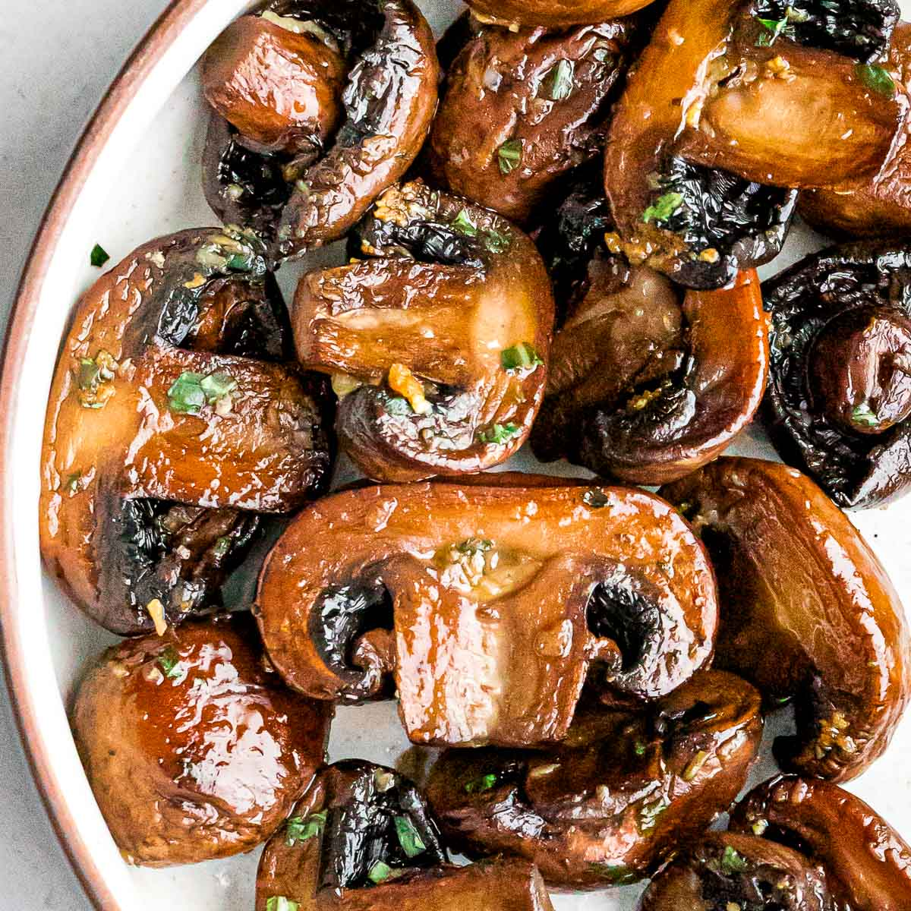

Easy Sauteed Mushrooms

Description
Savoury soyed mushrooms. Perfect side dish, for something like eggs or steak.
Ingredients
- olive oil
- mushrooms, sliced to preference
- soy sauce, to taste
Steps
- Pour 1 tbsp oil onto hot pan.
- Dump mushrooms in, stir continuously. If oil does not coat
all mushrooms, add more. Only coat enough, do not over-add
surplus of olive oil
- When mushrooms all coated with oil, add soy sauce to taste.
Stir until water has evaporated enough.
- Dump and serve.